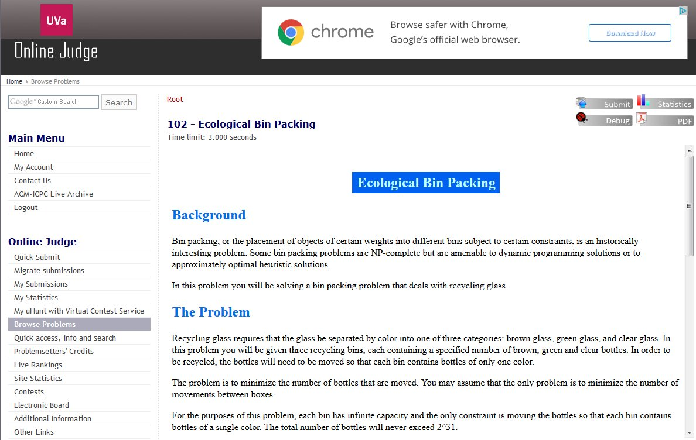
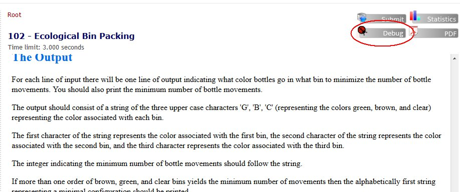
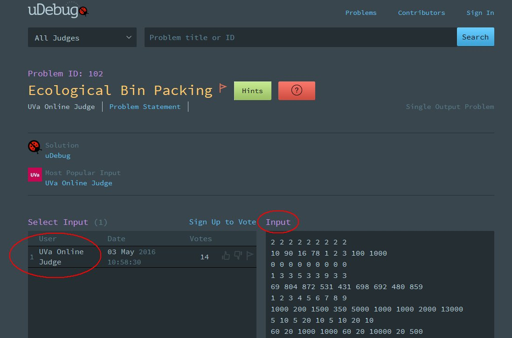
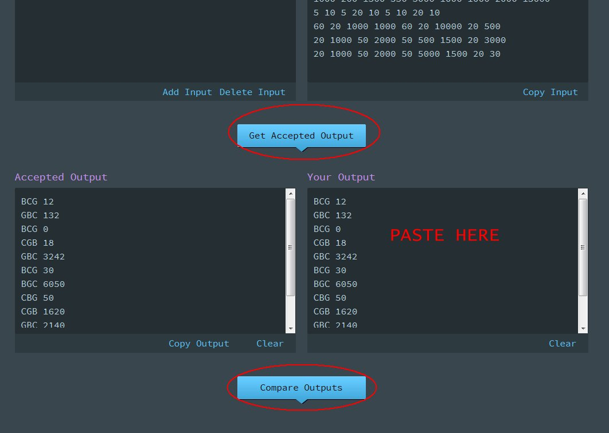
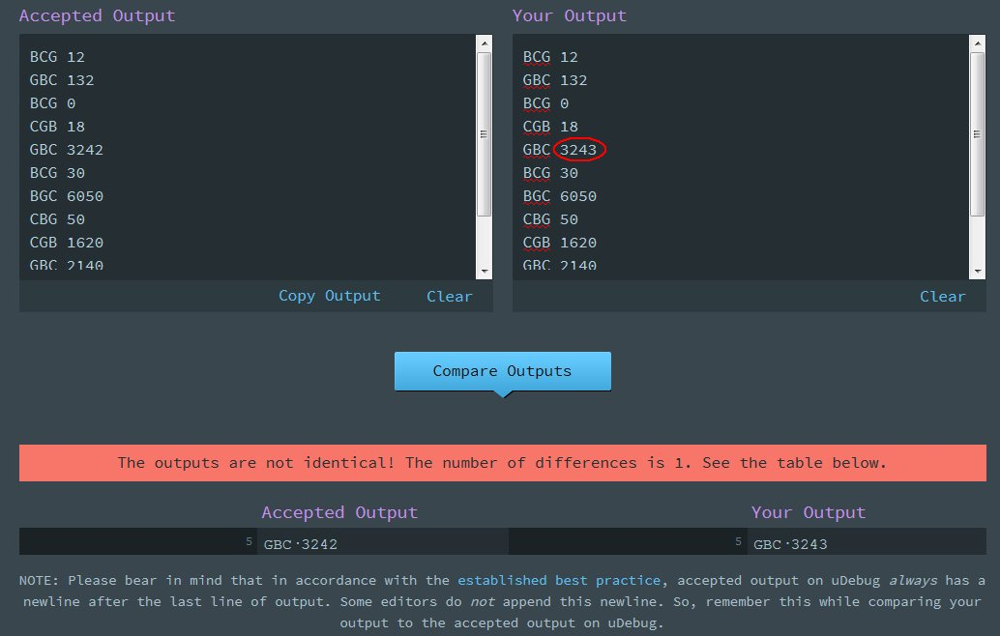
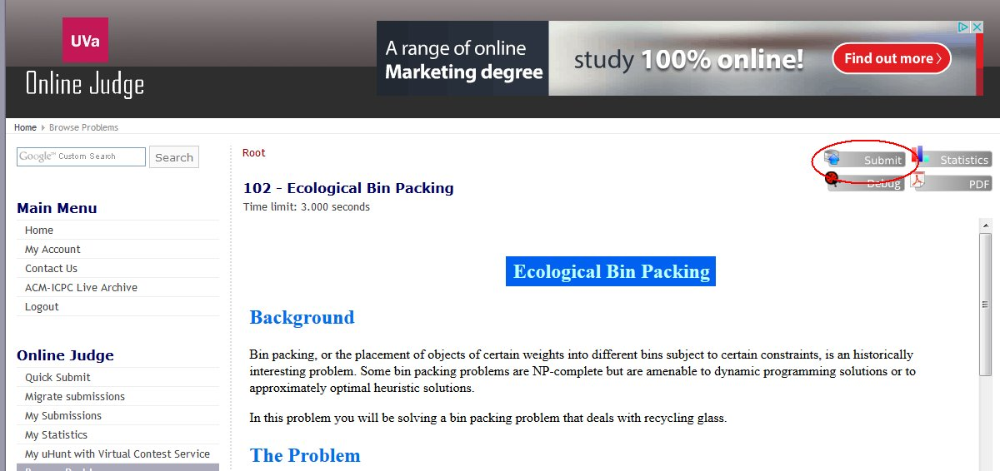
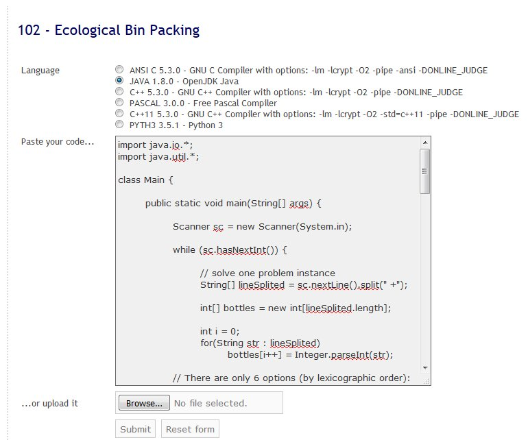
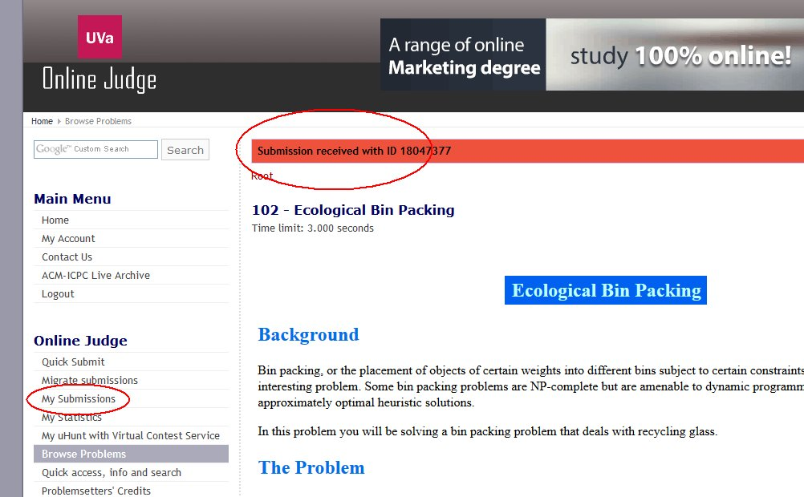
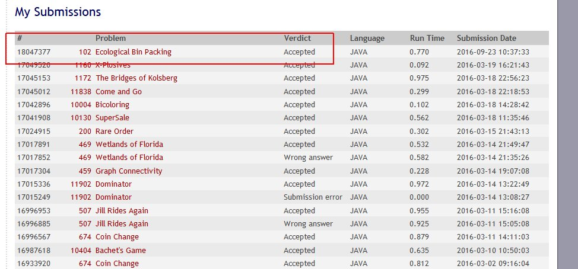

A forma como testamos a correção das nossas soluções é submetendo os nossos algoritmos no servidor da Universidade de Valladolid, conhecido apenas por UVa.
O primeiro passo é irem ao site, https://uva.onlinejudge.org, e registarem-se.
(nota: se não conseguirem entrar, aparecendo a mensagem "The page isn’t redirecting properly", apaguem os cookies do browser)
Quando entrarem no site, pesquisem pelo problema "UVa 102" e entrem no primeiro link (há-de ser este):

Aqui disponibiliza-se o enunciado que se costuma dividir nas seguintes secções:
Ora vamos pensar como resolver este problema. Pensem como poderiam encontrar uma solução antes de continuarmos...
. . .
Seguem-se spoilers :-)
. . .
Antes de falarmos da solução vamos estabelecer um método de trabalho.
Vamos criar as nossas soluções Java no Eclipse. Como estes problemas precisam de ler input e escrever output, torna-se cansativo estar sempre a reescrever o input quando testamos o nosso código. Para isso, eu costumo ter no meu main() o seguinte excerto de código:
if (!new Object(){}.getClass().getName().contains("Main")) try { // redirect System.in and System.out to in/out text files System.setIn (new FileInputStream("data/uva0102.in.txt" )); System.setOut(new PrintStream("data/uva0102.out.txt") ); } catch (Exception e) {}
Ou seja, coloco o input que quero no ficheiro uvaXXXX.in.txt na pasta data que crio no meu projecto Eclipse, e assim não me preciso preocupar mais com o input. No output, qualquer print escreve no ficheiro uvaXXXX.out.txt que me permite consultar e verificar se as soluções obtidas estão corretas.
Ter atenção que este código serve apenas durante a fase de construção e teste da solução. Mas não levanta problema, dado que para submeter no UVa a classe terá de se chamar Main, o que invalida a guarda do if!
Outra possibilidade, que funciona no Eclipse, é colocar o nome dos ficheiros de entrada e saída no menu Run | Run Configurations | Common | Standard input and output. Mas como é necessário mudar estes parâmetros cada vez que mudamos de problema, eu prefiro usar o código acima.
. . .
Bem, depois de pensar no problema, eu cheguei a esta solução:
import java.io.*; import java.util.*; public class UVa_102_EcologicalBinPacking { public static void main(String[] args) { if (!new Object(){}.getClass().getName().contains("Main")) try { // redirect System.in and System.out to in/out text files System.setIn (new FileInputStream("data/uva0102.in.txt" )); System.setOut(new PrintStream("data/uva0102.out.txt") ); } catch (Exception e) {} /////////////////////////////////////////////////////////////// Scanner sc = new Scanner(System.in); while (sc.hasNextInt()) { // solve one problem instance String[] lineSplited = sc.nextLine().split(" +"); int[] bottles = new int[lineSplited.length]; int i = 0; for(String str : lineSplited) bottles[i++] = Integer.parseInt(str); // There are only six possible options (by lexicographic order): // 1. Bin 1: Brown, Bin 2: Clear, Bin 3: Green (BCG) // 2. BGC // 3. CBG // 4. CGB // 5. GBC // 6. GCB // Compute total sum of bottles, then just subtract those bottles that are not moving. // The total sum must be kept on a long (64 bits) to prevent overflow long total=0; for(int b:bottles) total += b; // The original order is (Code: Color Bin) // B1 G1 C1 B2 G2 C2 B3 G3 C3 // index 0 1 2 3 4 5 6 7 8 // assume BCG long result = total - bottles[0] - bottles[5] - bottles[7]; String order = "BCG"; // now let's test the others: long test = total - bottles[0] - bottles[4] - bottles[8]; // BGC if (test < result) { result = test; order = "BGC"; } test = total - bottles[2] - bottles[3] - bottles[7]; // CBG if (test < result) { result = test; order = "CBG"; } test = total - bottles[2] - bottles[4] - bottles[6]; // CGB if (test < result) { result = test; order = "CGB"; } test = total - bottles[1] - bottles[3] - bottles[8]; // GBC if (test < result) { result = test; order = "GBC"; } test = total - bottles[1] - bottles[5] - bottles[6]; // GCB if (test < result) { result = test; order = "GCB"; } System.out.println(order + " " + result); } sc.close(); } }
Testei com o input do enunciado e o output foi o correto. O que devo fazer em seguida?
Para muitos dos problemas existentes no UVa há uma forma de testar a correção das nossas soluções. Convém, antes de submeter, testar o nosso programa com mais inputs e, se possível, mais exigentes. Estes inputs normalmente incluem testes nos limites máximos referidos no enunciado. Se o nosso programa falhar, devemos corrigir o problema. Se passar estes testes, a confiança no nosso código melhora substancialmente!
Para tal, vamos à página do problema e carregamos na opção Debug.

Daí vamos para outra página onde realizaremos os testes:

Podemos clicar nas suites de testes da caixa da esquerda, e vai-nos aparecer novos inputs. O que devemos fazer agora é copiar estes dados para o nosso ficheiro de teste que está no projecto Eclipse (neste exemplo é o data/uva0102.in.txt), e correr novamente o nosso programa.
Na página do debug há também duas caixas de output:

Se clicarem no Get Accepted Output, aparece-vos o output correcto na caixa da esquerda. Façam copy-paste do output do vosso programa para a caixa da direita. E depois devem comparar com o botão Compare Outputs.
Se a coisa correr bem temos:
Se não, ele dá-nos mais informação (no exemplo abaixo, eu alterei um dos outputs de propósito):

Quando estivermos satisfeitos com estes testes, podemos voltar à página do problema para submeter a solução:

Vocês podem submeter fazendo copy-paste do problema para a caixa de texto, ou por upload:

Agora é preciso ter atenção ao seguinte:
Se isto não for cumprido o servidor não aceita a vossa solução, estando ela correta ou não. Leiam também este pequeno texto.
Quando carregarem no botão do submit, o sistema volta para a página do problema e diz-vos que a submissão está a decorrer:

Passado uns segundos podem clicar na opção My Submissions e ver o estado da submissão:

E pronto! Temos um problema resolvido, submetido e aceito no UVa. Agora é passar ao próximo!
Como sugestão tentem resolver o UVa 256 (nota: por vezes o website não mostra o pdf do enunciado na página mas faz download automático do mesmo).
nota final: o Uhunt é um website ligado ao UVa onde podem: